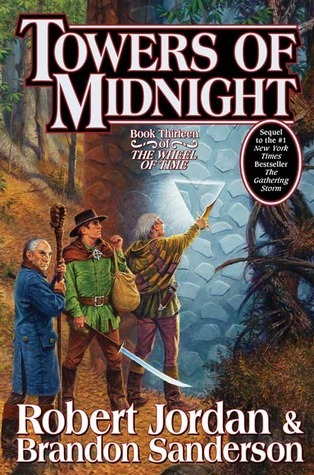

Towers of Midnight
- Read on 2010-10-29
- Rating: ️️️️️
- Format: 🎧 (38 hours 23 minutes)
Another great installment into the series. Obviously points the series towards its ultimate, inevitable end. I didn't think it was as well-done as #12 (not as smooth in scene/character line transitions) it was still enjoyable. Audiobook-wise, Michael Kramer and Kate Reading do their usual impeccable job.
UPDATE: Now that I've listened to it again, I need to change my review slightly. I thought it was a bit rushed the first time around, but now with more time (and me not being so anxious to finish the book), I think it was a well-paced book. It still has lots of topics, but it's a great installment.
- Prior: The Gathering Storm
- Next: American Assassin